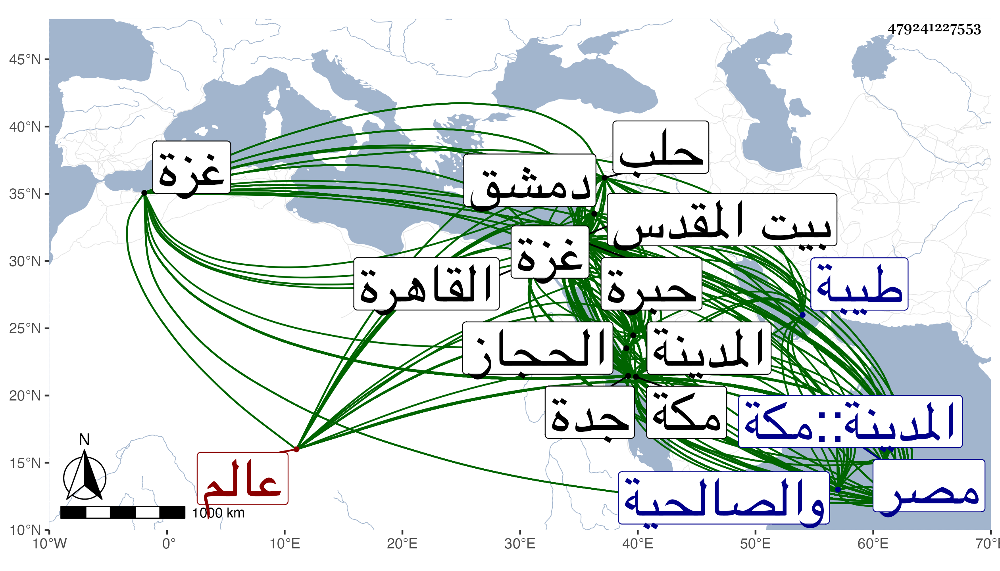

0902Sakhawi.DawLamic.ITO20230111-ara1.EIS1600.479241227553
Biography ID: 479241227553
904
محمد بن إبراهيم بن علي بن محمد بن أبي السعود محمد بن حسين بن علي بن أحمد ابن عطية بن ظهيرة الجمال أبو السعود ، عالم الحجاز ورئيسه وابن عالمه المضمحل لديه تزييف المبطل وتلبيسه البرهاني القرشي المكي الشافعي الماضي أبوه وجده والراضي بالقدر وكل ما يتحفه المولى به وفيه يسدده سبط عم والده الجلال أبي السعادات المتمكن من الاستنباط في علومه والتوليدات ، أمه زينب تزوجها أبوه في ربيع الأول سنة ثمان وخمسين فالجمال بكرهما وفخرهما ، ومولده في ليلة الثلاثاء ثامن عشري ذي الحجة من التي تليها في حياة جده لأمه وماتت أمه في ربيع الآخر سنة اثنتين وستين فنشأ مع كونه كريم الجدين وقديم بل مديم السعدين في كفالة أبيه في رفاهية وعز وشريف تربية وأحصن حرز واحتفل بختانه في سنة سبعين ثم فيها توجه به أبوه مع الشريف صاحب الحجاز إلى طيبة للزيارة ولما تم حفظه للقرآن وهو فيها أو في التي تليها تهيأ للاحتفال بالصلاة به في رمضان على جاري العادة فعاق عنه الاشتغال بالركب الرجبي ولكن رأيت بخط النجم بن فهد أنه صلى به في المسجد الحرام وكأنه عني بوالده ، وحفظ الأربعين مع إشارتها والمنهاج كلاهما للنووي وألفية الحديث والنحو ومختصر ابن الحاجب والتلخيص وغيرها كالطوالع وجانبا من الشاطبية وعرض في سنة اثنتين وسبعين فما بعدها على قضاة بلده الثلاثة بل على خاله الشافعي المنفصل وإمام مقامه بل على خلق من الأئمة الغرباء القادمين عليه كالشمس الشرواني والسيد معين الدين بن صفي الدين وفتح الله بن أبي يزيد الشرواني وأبي إسحاق بن نظام بن منصور الشيرازي الواعظ والجمال يوسف الباعوني الدمشقي الشافعيين ومحمد بن سعيد الصنهاجي ثم المراكشي ويحيى بن محمد بن علي بن عمر الزواوي ثم البجائي الفراوسني وأحمد بن يونس وعبد المعطي المغربيين المالكيين وخير الدين الشنشي الحنفي في آخرين كالشمس الطنتدائي الضرير والسيد السمهودي وأجازوه كلهم وذكروا من أوصافه وأوصاف أبيه بل جده وجد أبيه ما هم جديرون به حتى تمثل بعضهم بقول القائل :
| أولئك آبائي فجئني بمثلهم | إذا جمعتنا يا جرير المحافل |
وآخر بما قيل :
| نسب بينه وبين الثريا | نسب في الظهور والعلياء |
وأنه من بيت لم يتكل رؤساؤه على ما لهم من نسب ولا فاخر أحدهم إلا بنفسه ولو شاء لأدلى إلى المعالي بأم وأب وآخر : إذا طاب أصل المرء طابت فروعه البيت وآخر :
| لسنا وإن أحسابنا شرفت | يوما على الأحساب نتكل |
| نبني كما كانت أوائلنا | تبني ونفعل مثل ما فعلوا |
وأيضا :
| إن السري إذا سرى فبنفسه | وابن السري إذا سرى أسراهما |
وقال كل من الأولين والمتنكر له ظنا ثانيهما ما نصه مع زيادة كلمتين : إن قرة عين الفضل والأفضال وغصن دوحة العلم والكمال الفطن اللوذعي والذهن الألمعي من له البشرى بالسعادة والحسنى والزيادة الذكي النجيب الأمجد أبا السعود جمال الرفعة والدين محمد بن الهمام الكامل والعالم العامل القمقام إمام قضاة الإسلام ومقتدى ولاة الأنام من هو للمفاخر والمآثر مجمع وللعلم والحلم منبع :
| وجدت به ما يملأ العين قرة | ويسلى عن الأوطان كل غريب |
أعني السيد العظيم البحر القرم الكريم برهان العلم والفضل والتقوى والحلم والدين والفتوى فرد يا رب بفضلك فواضل الولد لمزيد حبور الوالد وأعذهما بحفظك الواقي من شر كل حاسد حاو لحفظ أربعي النبوي للإمام النووي ولضبط متين منهاجه بأعضائه وأوداجه وألفيت منه ألفية النحو كآي من الفرقان على طرف من اللسان ألقيت وداده في سواد فؤادي وأخذت أحمده وأمدحه فوق المرام بل وفق المراد في كل نادي ثم أجزت له أن يروي عني هؤلاء الكتب مع كل كتاب قرأته أو طالعته بالشروط المعتبرة عند المهرة والله أسأل أن يجعل ألفاظ الكتب لجنابه مجازا إلى درك حقائق لبابه ليكون من العلماء وأعاليهم لا من سفلتهم وأدانيهم فخرا للقبائل ذخرا للأماثل . وقال ثانيهما فقط : فلما صادفت أن تحبه الفطانة والكياسة الحقيق عند التحقيق بالتقدم والرياسة الذي قد ترعرع بنعمة الله في ظليل ظلال العلم والتقوى ويتزعزع بفضله أحرف الدرس والفتوى فرع الدوحة الشامخة وريع الريغ الناضخة جلاء أحداق الحذاق وغشاء أبصار الحساد الأغساق الحامد المحمود جمال الفضل والدين أبا السعود وجه الله ركاب الأكابر نحو جنابه وأطرح سفائنهم في عبابه له ابتدار من السعود متواصل واقتدار على الصعود متكامل قد سلك طرق الجد في تحصيل الفضائل وملك رقاب الفواضل بحيث نطقت بفضله كلمة الكملة من الأماثل . وقال الثالث من جملة وصف جليل ورصف أثيل : لا زالت الشهادات له بالفضل متناسقة والسعادات إليه متسابقة وفي أبيه :
| قاض إذا التبس الأمران عن له | رأي يخلص بين الماء واللبن |
| القائل الصدق فيه ما يضر به | والواحد الحالين في السر والعلن |
والرابع : السيد المنتجب الرشيد والسند المنتخب السديد البالغ درجة الأفاضل في عدة سنين قلائل قد حفظها حفظا متينا وفهم معانيها فهما مفهما مبينا فلله دره محفوظا في علانيته وسره مد الله تعالى في عمره وهيأ له أسباب الكمال بيسره ووفقه بجوده لمراضيه وجعل مستقبل عمره خيرا من ماضيه . والخامس : أنه آذن إن شاء الله تعالى ببلوغ درجة والده متع الله بوجوده وبلغه سائر مقاصده وأنشد :
| إن الهلال إذا رأيت نموه | أيقنت أن سيصير بدرا كاملا |
والسادس : أنه المشاهد بالقوة عين كمال فيه وكيف لا يكون كذلك والولد سر أبيه فلا يستغرب إن زهى بفرعه وفضله إذ مرجع كل شيء على الحقيقة إلى أصله . والسابع :
| مع كرم شيم وطباع | وحسن سمت وانطباع |
وإمام المقام سيدنا الفقيه الفاضل نجل العلماء وخلاصة الكرماء وقرة عين الأقرباء والأحباء شرف العلماء أوحد الفضلاء أعزه الله بعز طاعته وجعل العلوم الشرعية أشرف بضاعته ثم أنشد في عزة وجود مثله :
| وفي تعب من يحسد الشمس نورها | ويجهد أن يأتي لها بضريب |
وقاضي الحنفية : أنه أنبأ مع حفظه لها عن إدراك معانيها وإن له بها مساس فلا ينبغي أن غيره في الحفظ عليه يقاس . وخاله : إنه أحسن وأعرب ومن أشبه أباه فما أغرب نجل الكرام وخلاصة السلف الصالح من السادة الأعلام معلم الطرفين وكريم الجدين ظاهر النباهة والنجاح الذي لاحت عليه بحمد الله أعلام الفلاح والأخير : الحمد لله الذي استجاب لإبراهيم في ذريته ورزقه من السعود نهاية أمنيته بمقامه بمكة على الدوام محفوظا وببنائه المشيد لم يزل ملحوظا . والذي قبله : ذو القريحة التي لا تضاها والفكرة التي لا يتناهى ثناها ليث اقتناص ظباء المباني بازي افتراس شوارد أبكار المعاني . وقال بعض من وصف والده بشيخنا منهم :
| قل لقاضي القضاة برهان دين الله | شيخ الأئمة الأعلام |
| عمدة الناس في العلوم جميعا عونهم في المهامه والظلام | |
| أنت بحر وإن نجلك أضحى | قرة للعيون فرد سام |
في أبيات . غيره :
| قل للمعاني تهني وارقصي وطب | فقد أتاك أصيل سابق النجب |
| يهنيك يهنيك من قد جاء مبتدرا | يسعى إليك بجد ليس باللعب |
| واستبشري ثم حثي السير مسرعة | إلى علاه وقولي مرحا تصب |
| أبا السعود رعاك الله ما طلعت | شمس وزادك إقبالا على الطلب |
وقال :
| وخصك الله بالتوفيق منه على | رغم الحسود مع العلياء في رتب |
| يهنيك جمع علوم لا نظير لها | في رأس مال نفيس جل عن ذهب |
| وقد عرضت فشنفت المسامع في | حفظ ولفظ بتحقيق بلا نصب |
| وأن فيها كتابا لو يقاس به | بين العلوم لأم الكل في الكتب |
| وبهجة العلم لا شيء يشابهها | من الفضائل والأخلاق والأدب |
| فانهض وجد وبادر كي تفوز بما | فاز الجدود به والأهل من أرب |
| واسلم ودم وارق واسعد واحفظ وابق على | مر الزمان بلا كيد ولا ريب |
في أبيات . وفي استيفاء جميع هذا طول . ولازم والده في الفقه وأصوله والعربية والحديث والتفسير وغيرها كالمعاني والبيان وتهذب بمخالطته وتهذب به في رياسته وبلاغته ورأى أنه كفاية عن غيره ممن لم يسر في العلم والتحقيق كسيره كما اتفق لجماعة من الأئمة كالجلال البلقيني في الاقتصار على أبيه الأمة ونحوه التاج السبكي في كون جل انتفاعه بأبيه المجتهد المزكي والولي العراقي مع أبيه بالنسبة إلى الحديث إلى غيرهم من العلماء في القديم والحديث لا سيما ومجلسه كان محط الرحال من الوافدين الفائقين في الفضائل والاعتدال فضلا عن أهل بلده المذكورين بالكمال فاستفاد من مباحثهم ومناظراتهم السديدة المقال ما انتفع به في الاستقبال مع شهادتهم له بشريف الخصال وكان مما قرأه على والده العجالة شرح المنهاج بكمالها في سنة ست وسبعين وجانبا من المتن والروضة والحاوي وحاشية والده على شرحه للقونوي وشرح البهجة للولي العراقي والمفصل للزمخشري بكماله وكان يغتبط به وقطعة من جمع الجوامع مع ملاحظة شرحه للمحلي ومن كتب الحديث صحيح البخاري ومسلم والسنن لأبي داود والترمذي والموطأ لملك والسيرة النبوية لابن هشام والشفا والترغيب والترهيب للمنذري وما لا ينحصر دراية ورواية مع أن مجالسه في الإسماع إنما كانت غالبا دراية وربما تكرر له بعضها غير مرة ومن القصائد جملة كبانت سعاد والبردة والهمزية له بل كان قارئ دروسه أيضا دهرا في الروضة والكشاف بمدرسة السلطان وغيرها وكذا أكثر من ملازمة دروس عمه الفخر أبي بكر حتى أخذ عنه جميع الحاوي والمنهاج وابن الحاجب الأصلي وقطعة من الإرشاد لابن المقري ومن جمع الجوامع ومن التلخيص في المعاني والبيان وجميع صحيح البخاري وغير ذلك وكان مجلسه أيضا بغية الغرباء والعلية من النجباء وربما أخذ عن غيرهما في الفنون كمذاكرته مع عبد الغفار بن موسى الجزري في العربية والمنطق ومع عثمان بن سليمان الحلبي في أصول الفقه حين مجاورتهما في سنة ثلاث وثمانين بل دخل قبلها مع أبيه الديار المصرية فلقي بها الأمين الأقصرائي والكافياجي وغيرهما من الأئمة فكان مما أخذه عن الأمين بعض ختومه وعن المحيوي من مصنفه مفتاح السعادة في شرح كلمتي الشهادة وعن الزين زكريا بعض شرحه للبهجة ومن ذلك المجلس الأخير وخالط السراج العبادي والبقاعي وغيرهما ممن كان يتردد لأبيه وسمع حينئذ على الشهاب الشاوي والزكي أبي بكر بن صدقة المناوي والشمس الهرساني في آخرين بل حضر بمكة قبل ذلك في سنة اثنتين وسبعين عند الشرواني في مجاورته بعض دروسه وقبلها على الكمال إمام الكاملية في الشفا ومجمع الأحباب وغيرهما من دروسه وبعدها على النجم عمر بن فهد المسلسل بالأولية والأربعين التي خرجها شيخنا لشيخه الزين أبي بكر المراغي والمجلس الأخير من الحلية لأبي نعيم وكان النجم كثير التنويه به والبث لأوصافه وحسن طلبه بحيث كان يكتب بذلك إلي في الديار المصرية وأجاز له بإفادته خلق من المسندين المعتبرين والعلماء المذكورين من أهل الحرمين وبيت المقدس والخليل ومصر والقاهرة ودمشق والصالحية وحلب وغزة وغيرها رأيت سرد أسمائهم بخط النجم وفيهم من اشترك مع والده في الرواية عنه فمن مكة البرهان الزمزمي والتقي بن فهد والزين عبد الرحيم الأميوطي وأبو حامد وأبو عبد الله ابنا ابن ظهيرة وأم هانئ ابنة أبي القسم بن أبي العباس . ومن المدينة أبو الفرج المراغي . ومن بيت المقدس التقي أبو بكر القلقشندي وعبد القادر النووي والشمس بن عمران المقري . ومن الخليل الزين عبد الرحمن بن علي بن إسحاق التميمي ومن مصر الزين عبد الرحمن الأدمي والنعماني . ومن القاهرة العلم البلقيني والشرف المناوي والبدر النسابة والجلال بن الملقن وأختاه خديجة وصالحة والجلال القمصي والبهاء بن المصري والشهاب الحجازي والزين عبد الرحمن بن الفاقوسي وعبد الرحمن سبط الشيخ يوسف العجمي وعبد الرزاق من بني الحافظ القطب الحلبي الشافعيون والسعد بن الديري والتقي الشمني والشمس الرازي الحنفيون والقرافي وابن حريز المالكيان والعز الحنبلي وقريبته نشوان وأم هانئ الهورينية وأنس اللخمية جهة شيخنا ابن حجر وهاجر القدسية . ومن دمشق صالحيتها البرهان الباعوني والنظام بن مفلح الحنبلي وست القضاة ابنة ابن زريق وأسماء ابنة ابن المهراني وفاطمة ابنة خليل الحرستاني . ومن حلب إبراهيم بن أحمد بن يونس الضعيف والمحب بن الشحنة وأبو ذر محدثها . ومن غزة عالمها الشمس أبو الوفا بن الحمصي . ثم لما تحقق منه أبوه الارتقاء في الفضائل ومزاحمة الأعيان بما اشتمل عليه من الوسائل وعلم طمأنينة الأنفس الزكية به وفهم منه الخبرة بإيضاح كل مشتبه استنابه في قضاء مكة الفائقة في البركة وكذا في قضاء جدة ليزول به عن الضعفاء ما لعله يحل بهم من الكرب والشدة وينتفع بسياسته من قصده وأمه مع طلب ذلك له منه من بعض الأئمة فحسنت سيرته ومداراته وظهرت في كله كمالاته مع عدم تهالكه على ذلك وتصديه لهذه المسالك بل هو مقبل على التكميل لنفسه والتحصيل الصارف له عن التكلم بحدسه حتى عرف بوفور الذكاء وقوة الحافظة والقدرة على التعبير بالألفاظ التي هي بالقانون العربي محافظة وجودة قراءته وطلاقته واستحضاره لنفائس من فنون الأدب والشعر والنكت والتاريخ ومزيد أدبه وتواضعه وصفائه واستجلابه لكل أحد ومزيد خدمته لأبيه وتمشية حال كثير ممن يعاديه عنده فمال إليه كل من استقام من الخاص والعام وكذا باشر مشيخة المدرسة الجمالية اليوسفية وغيرها بمكة وكان قارئ الحديث بين يدي أبيه فكان مع كونه مشتغلا بالقراءة مصغيا للمباحث بحيث يتكلم باليسير الواضح التصوير الغني عن طول التقرير . ولما كنت بمكة في سنة إحدى وسبعين رام والده حضوره عندي فما تيسر ثم حضه على ملازمتي ومساومتي في سنة ست وثمانين حتى قرأ علي شرحي لألفية الحديث قراءة متقنة وأخذ عني غيرها وامتلأت عيني منه وتصورت تفرده بحمل العلوم عنه وكتبت له إجازة هائلة تزايد سرور أبيه بها أثبتها في موضع آخر ، وتصدى قبل ذلك وبعده للإقراء في الفقه والعربية والأصلين والمعاني والبيان والحديث بالمسجد الحرام وغيره وحضر عنده الأكابر ووردت علي مطالعات غير واحد منهم تخبر بما أعلم أزيد منه وكذا تكررت علي مشرفاته الدالة على مزيد التودد والتأدب المشتملة على العبارة الفائقة والإشارة الرائقة مع الخط النير المنسوب واللفظ الذي يملك به القلوب وهو بحمد الله في ترق من المحاسن إلى أن استقر عقب موت والده في القضاء استقلالا وفي مشيخة مدرسة السلطان وسائر ما كان معه فباشر ذلك أحسن مباشرة سيما في إقراءه الكشاف والروضة المتواترة وتحديثه بكتب الحديث مطولها ومختصرها سيما صحيح البخاري بأماكن من المسجد الشريف المتشرف به السامع والقاري حتى أطبق عليه الموافق والمخالف واتفق في الثناء على محاسنه القادم والعاكف ، وجاورت غير مرة بعد أبيه فما تحول عن آدابه وأياديه وإن كان في تعب كثير ونصب لما الوقت به جدير وله في تفرقة ما لعله يصل لمكة من المبرات والتوثقة المتوصل بها لجلب المسرات التصرف السديد والتلطف الذي يسترق به الأحرار فكيف بالعبيد حتى صار رئيس الرؤساء وجليس البرامكة والخلفاء زاده الله من أفضاله وأعاذه من كل سوء وبلغه نهاية آماله . ورأيته كتب في صفر سنة خمس وثمانين صدر إجازة لعلي بن الفخر أبي بكر المرشدي بما نصه : الحمد لله الذي نوع الفخر فجعل جلاله وكماله في فخر الدين وأعلى قدر من شاء من عباده وزينه بالعلم المبين ورفق من أراد به الخير وأرشده إلى الصراط المتين الغني الذي لا يبخل على عبده مع تطاول السنين والأمر وراء هذا فخطبه تصدع القلوب وأدبه يرتدع به الحاسد المغبون وشكله من المفرحات وعدله مع المداراة من المحاسن الواضحات كتوقفه في تنفيذ الحكم الثابت في مصر بأرشدية عبد القادر بن عبد الغني القباني وكذا بإقرار أبي بكر بن عبد الغني بما في جهته لأم ولديه الأول والثاني ونحوه الحكم بالبراءة بين ابن قاوان ووصيه العالي المكان وترك الوصف بالشرف المجحود حين مباشرته بعض العقود ممن اجتمع له بديع الفهم وقوة الحافظة وانتفع الأجلاء ببديهته فضلا عن رؤيته التي على التحقيق محافظة ولشعراء بلده والقادمين عليه فيه غرر المدائح ودور المنائح وقد تكررت زيارته لطيبة وبشارته من الصالحين بدفع كل كرب وريبة فلله دره من بحر علم لا تكدره الدلاء ونحر لحاسده بسهم لا ينفك مدى الدهر عنه به الابتلاء إن تكلم في الفقه فالجواهر قاصرة عن بحر علمه والمطلب بل الكفاية من وافر سهمه فتقريره فيه واضح جلي وتعبيره عن دقائق مشكله راجح على أوفى أصوله فالفخر أو الولي أو في العربية فبلسان شاهد بتضلعه وبيان يعجب منه كل بليغ كلما سمعه أو المعاني فالفريد في المفردات والمباني أو الصرف فتصريفه إليه المنتهي أو الكلام فتحريه مثبت ليفين الإيمان الذي يشتهى أو التفسير فالكاشف لدسائس كشافه والعارف لما يزيل الألباس عن المناظر باعترافه أو الحديث فالفائق الرائق في تقريره الشاسع وتحريره النافع أكرم به من فريد جبلت القلوب الصافية على حبه ووحيد عطفت عليه السادة فكلهم يرجو القربة بقربه جمع بين المعقول والمنقول ودفع الجهل عن نواحيه بقطع كل مشكك سول ومن يجعل الله نورا فلا استطاعة لإطفائه ومن شنع على محاسنه وجب الدعاء بطول بقائه .
